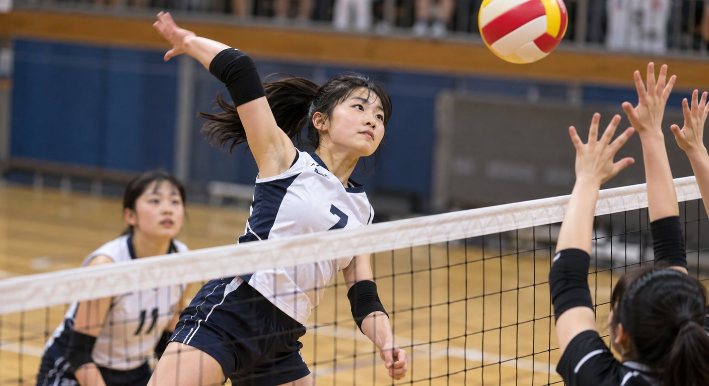
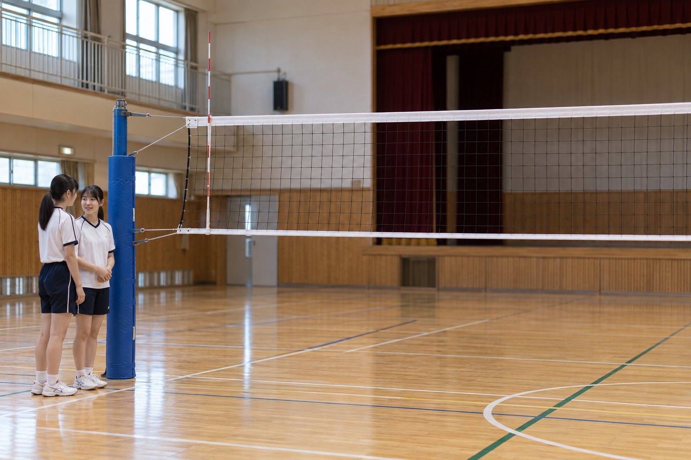
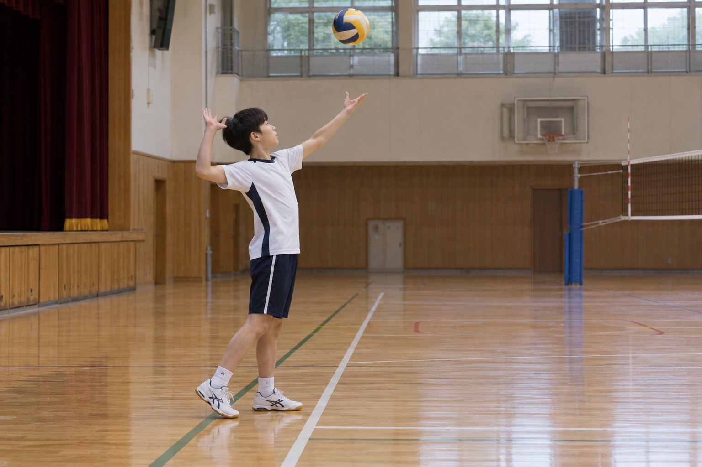
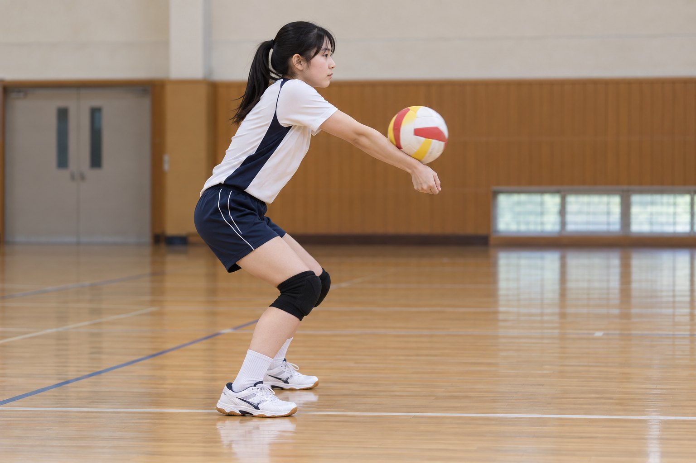
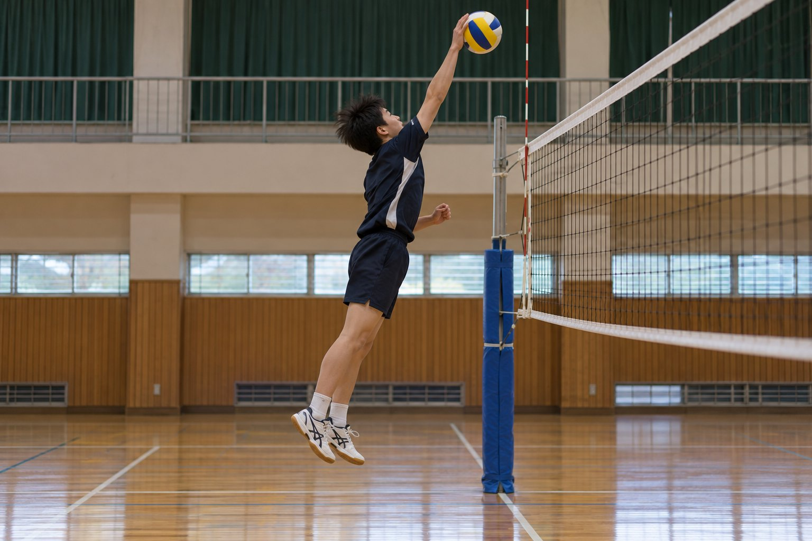

질문에 답하며 배우는 네트 높이, 리시브 각도, 스파이크, 로테이션
이 학습지의 사진은 AI로 생성한 이미지입니다. → 키 또는 아래 버튼으로 넘어가요.

네트 윗부분의 흰 띠가 높이의 기준이에요.
국제 규정은 남자 2.43m, 여자 2.24m예요. 학교 수업에서는 학생들의 키에 맞춰 더 낮게 설치하기도 해요.
공을 치는 순간 엔드라인을 밟거나 넘으면 폴트예요. 공을 친 뒤에는 코트 안으로 들어와도 괜찮아요.

공을 던져 올린 뒤 엔드라인 뒤에서 쳐요.

흰 선은 두 팔이 만든 면, 점선은 그 면에 수직인 선(법선)이에요.
입사각과 반사각은 거의 같아요. 그래서 팔 면을 세터 쪽으로 기울이면 공이 세터 쪽으로 가요. 팔을 휘두르지 말고 면의 각도로 방향을 만들어요.

그래프의 두 주황 선 사이 각도로 치면 네트를 넘고 상대 코트 안에 떨어져요. (가로·세로 눈금 간격이 달라요)
공을 치는 높이(타점)가 높아지면, 코트에 넣을 수 있는 각도 범위는 어떻게 될까요?
높은 곳에서 치면 네트에 걸릴 걱정이 줄어서 더 가파르게 내리칠 수 있고, 그만큼 선택지가 늘어요. 그래서 점프해서 가장 높은 곳에서 치는 게 중요해요.
위에서 본 우리 편 코트예요. 위쪽이 네트예요.
2번(앞줄 오른쪽) 선수가 1번(서브 자리)으로 이동하고, 나머지도 한 칸씩 이동해요. 그래서 모든 선수가 돌아가며 서브를 넣어요.
세터가 올린 공을 같은 세터가 곧바로 다시 쳤다.
같은 선수가 연속으로 두 번 공을 치면 반칙이에요.
우리 팀이 공을 네 번 쳐서 상대 코트로 넘겼다.
한 팀은 공을 최대 세 번까지만 칠 수 있어요. (블로킹은 횟수에 넣지 않아요.)
공을 치는 동작 중에 몸이 네트 윗부분의 흰 띠에 닿았다.
공을 치는 동작 중에 네트 윗부분에 닿으면 반칙이에요.
서브한 공이 네트 윗부분을 스치고 상대 코트 안으로 넘어갔다.
서브한 공이 네트를 스치고 상대 코트로 넘어가도 계속 경기해요.
랠리에서 이기면 서브권과 상관없이 1점이에요. 24대 24가 되면 2점 차가 날 때까지 계속해요. 5세트는 15점이에요.
팔 면을 목표 방향으로 향해요.